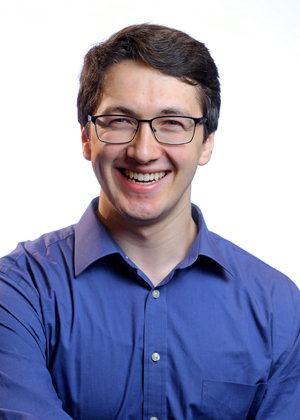

<main id="main">

<!-- ======= Bio Info Section ======= -->
<section class="biography" data-aos="fade-up">
  <div class="container">

    <div class="row">
      <div class="col-lg-6">
        
      </div>
      
      <div class="col-lg-6 pt-4 pt-lg-0">
	<h2 class="animated fadeInDown">Welcome to <span>Jason Torchinsky's Webpage</span></h2>
        <p class="animated fadeInUp">Jason Torchinsky's Webpage for all Jason Torchinsky webpage-related needs.</p>
	<p class="animated fadeInUp">Hello! I’m Jason Torchinsky, a fifth-year Ph.D. student in the Mathematics department at the University of Wisconsin-Madison. I obtained my bachelor’s degree in mathematics and physics from <a href="https://www.union.edu/news/stories/201806/class-2018" title="Union College Class of 2018 List"> Union College in 2018</a>. </p>
	<p class="animated fadeInUp">I am currently working with <a href="https://www.math.wisc.edu/~stechmann/" title="Professor Samuel Stechmann's Webpage"> Professor Samuel Stechmann</a> on projects pertaining to parallel computing in computational climate science. I am also working with <a href="https://cfwebprod.sandia.gov/cfdocs/CompResearch/templates/insert/profile.cfm?mataylo" title="Mark Taylor's Webpage"> Mark Taylor</a> on the <a href="https://e3sm.org/" title="E3SM Homepage"> Department of Energy's Energy Exascale Earth System Model</a> and <a href="https://www.pediatrics.wisc.edu/staff/green-chris/" title="Chris Green's Webpage"> Dr. Chris Green</a> on a model of ventilation-perfusion for educational uses. In the past, I have done research in computational fluid dynamics at Los Alamos National Labs and Union College, computational topology at Union College, as well as computational algebraic number theory at California State University Channel Islands as part of their 2017 Summer REU. </p>
	<p class="animated fadeInUp">My research interests are primarily in computational mathematics and simulating physical systems using high-performance computing (even for the small simulations I do now!).</p>
	<p class="animated fadeInUp">I am now funded by the <a href="https://www.krellinst.org/csgf/" title="The DOE CSGF Webpage">Department of Energy’s Computational Science Graduate Fellowship</a>, and was a teacher’s assistant in my department during the 2018-2019 academic year.</p>
      </div>
    </div>

  </div>
</section><!-- End Bio Info Section -->


</main><!-- End #main -->


